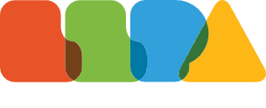

≡
Content
Articles, guides, videos, reports and briefings that explain what is changing and why it matters.
Explore content →Everything you need to make better decisions about AI, for your work, your organization, and your future.
You don’t need to know the right AI term or even exactly what kind of help you need yet.
Courses, workshops and learning paths for individuals, teams and organizations.
Explore training →Assessments, checkers and practical tools that help you understand your situation or make a decision.
Explore tools →Articles, guides, videos, reports and briefings that explain what is changing and why it matters.
Explore content →Find expert help for AI strategy, implementation, skills, governance and other specific needs.
Find help →Choose the role closest to yours and we’ll show you the questions, tools and resources most likely to be useful.
Understand what’s happening, what it could mean for your life, and what you can reasonably do about it.
Explore →Practical guidance for choosing tools, protecting your data, training your team and preparing your business for more capable AI.
Explore →Understand which work is changing, where people still add value, how to set responsible AI rules and how to build an AI-ready team.
Explore →A practical executive guide to AI strategy, governance, risk, workforce change and what more capable systems could mean for your organization.
Explore →Technical guides, evaluations, evidence and tools for people building with AI.
Explore →Practical classroom resources for AI literacy, academic integrity, future careers and responsible use.
Explore →Evidence-based briefings and practical tools for AI adoption, procurement, regulation, workforce policy and emerging risks.
Explore →Curated resources from across AI Channel, rather than everything at once.
 Work & preparedness
Work & preparednessUnderstand how AI could change your work, workforce or organization, where exposure is highest, and what practical steps make sense now.
Explore work & preparedness → Practical AI use
Practical AI usePractical guidance on choosing and using AI tools, integrating them into work or education, building skills, and protecting sensitive data.
Explore practical AI use → Trust & verification
Trust & verificationUnderstand accuracy, hallucinations, misinformation and deepfakes, privacy, security, bias and accountability, and how to verify what AI tells you.
Explore trust & verification →Browse training, or talk it through with someone who can help.
Browse Available AI related training from a consortium of different education partners across 55+
Tell us what you need support with. That might be training your whole organization, building a tool, or increasing AI adoption. We’ll connect you with a member in whatever country you live in.

AI Channel, led by the Leading Learning Partners Association (LLPA), helps people and organizations understand what increasingly capable AI could change, where they may be unprepared, and what is worth doing now.
We draw on research, capability evaluations, forecasts, surveys and real-world data. We distinguish observed evidence from estimates and scenarios, and update our conclusions as the evidence changes.
We work with researchers and practitioners across AI safety, evaluations, governance and advanced AI, translating emerging research into practical information for people outside the field.
Our tools, guides, training and expert support cover both today’s AI challenges and preparation for more capable systems, from work and skills to privacy, governance, AI control and longer-term preparedness.
Find learning options for individuals, teams and organizations, from practical AI use to technical skills, leadership, governance and implementation.
Browse by need first. Provider and format come after.
Practical fluency, prompting, productivity, verification and responsible use.
Role-specific training, AI literacy and workflows for teams adopting AI.
Strategy, readiness, governance, workforce change and decision-making.
Engineering, agents, evaluation, security, governance and deployment controls.
AI literacy, classroom use, assessment and preparing students for changing work.
Describe the skills or capability gap and we can help identify a relevant learning option.
Interactive tools turn broad AI questions into something more specific: your role, your organization, your controls, your dependencies, or your understanding.
Explore which tasks in your role may be more exposed to AI and what may remain harder to automate.
Check workflows, data exposure, staff capability and preparedness for more capable AI.
Find single points of failure in a household or small organization.
Audit ownership, access, logging, approval and shutdown controls around an AI deployment.
Classify a system and identify the obligations and readiness questions that may apply.
Practice spotting manipulated or AI-generated content and learn better verification habits.
Change assumptions and see how sensitive a toy catastrophic-risk scenario is. Educational only, not a forecast.
Browse practical explainers by topic. Start with the question, not the jargon.
Jobs, task exposure, career resilience, skills and what may remain valuable.
Accuracy, privacy, workflows, responsible use and knowing when not to trust a model.
Hallucinations, scams, deepfakes, misinformation, privacy and verification.
Readiness, governance, workforce change, adoption, policies and controls.
Capability trends, agents, loss of control, shutdown, replication and catastrophic-risk debates.
A maintained overview for people who want orientation before choosing a deeper topic.
Plain-language explainers and checklists. Start with the question, then go deeper.
Habits, boundaries, and knowing when to disconnect.
What to do when a model is confident, useful, and still incorrect.
When AI confidently gets it wrong, and how to check before you rely on it.
Practical AI safety for sole traders and small teams.
Before your business adopts any AI tool, run through data, privacy, compliance, and operational risk.
Use external AI tools without letting confidential data leave your network.
Security, privacy, and governance to build in when you train or deploy models inside the organization.
AI safety, privacy, governance, and regulation reading from around the world.
A better way to read the lists: exposure, adoption cost, regulation, and liability, not a redundancy date.
Look for friction, trust, and accountability. No career is guaranteed AI-proof.
A chain-of-access check: capability is not enough without tools, money, networks, and granted autonomy.
Why “just pull the plug” is both right and too simple once copies and dependencies spread.
What is plausible, and what is a movie plot. Near-term risk is mostly cascades of human and machine failure.
A hypothesis about accelerating progress, not an observed event or an agreed timetable.
What people mean by the number, and why a personal probability is not a measured fact.
The access question comes first. Influence requires a connection people or attackers already made.
What scheming tests actually show, and what they do not show about motives.
Replication, model weights, and the missing steps between copying files and staying online.
Each cluster separates what is plausible, what is uncertain, and what you can do about it.
What an AI takeover would actually require. Plausible pathways, known constraints, and science-fiction assumptions.
Task-level exposure and career resilience, without pretending anyone can predict your redundancy date.
Voice cloning, deepfake video, phishing, and the verification habits that reduce your odds of being fooled.
What AI changes about cyber risk, and how households and small organizations can remove single points of failure.
Preparations for outages, disruption, and misinformation that stay sensible even if the worst case never arrives.
Passkeys, identity theft, voice cloning, and how to reduce the personal data attackers can turn into impersonation.
Check AI-generated images, video, text, and viral claims with provenance and source checks, not detector hype.
Who regulates AI, what governments and companies can actually control, and where accountability sits when systems cause harm.
Confidential data, employee use, policies, and rules for generative AI at work.
Scheming, alignment, agent incidents, and the difference between a safety evaluation and a real-world capability.
Short explainers and deeper walkthroughs for concepts that are easier to understand visually.
From short answers to deeper evidence-led explainers.
One question at a time: jobs, hallucinations, deepfakes, timelines, privacy and more.
Visual explanations of benchmarks, task horizons and what those trends do and do not mean.
Adoption, team use, governance, data, policies and practical examples.
Walk through scheming, reward hacking, evals and control without overstating the evidence.
Classroom use, authenticity, critical thinking and preparing students for changing work.
Scenario-based videos that separate predictions from planning exercises and contested assumptions.
Research-led reports and concise briefings for organizations, leaders, policymakers and people who want the source material behind the headline.
Capability, adoption, forecasts and policy developments with plain-language annotation.
What organizations are adopting, where capability gaps remain, and what changes by market.
Strategy, ownership, controls, workforce exposure and decision points for leadership teams.
Capability evidence, uncertainty, procurement, governance and policy levers.
Primary-source summaries of evaluations, control research, incidents and methodological limits.
When a guide or course is not enough, describe the problem and AI Channel can help route you toward relevant expertise from across the member network.
Assess where the organization stands, prioritize use cases and define an adoption roadmap.
Training strategy, role-based learning, workforce capability and change enablement.
Policies, accountability, risk classification, governance and operational controls.
Architecture, agents, workflows, data, deployment and technical enablement.
Decision support for strategy, investment, workforce implications and organizational preparedness.
You do not need to choose a service category. Start with the situation and we can route from there.
The intake should ask what you are trying to achieve, what kind of organization you are, the urgency, and any constraints. The AI Project Team can then route the request to a relevant member rather than making the visitor guess who they need.
AI Channel brings together guidance, tools, learning opportunities and expertise from across the LLPA ecosystem so people and organizations can understand where they stand and find a useful next step.
Start with your question, role or need. AI Channel helps surface the most relevant content, tool, training or expert route.
Member courses, tools, services and resources can be surfaced where they are relevant to the visitor rather than sitting in isolated listings.
Research-led material should distinguish established evidence, estimates, disagreement and speculation, with live facts checked before publication.
Content should remain useful on its own. Training or consulting appears when it is a sensible next step, with the relationship to members made clear.